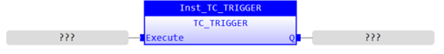
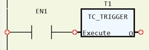

System Function.
Starts a previously set up SCOPE command.
|
Execute: BOOL; |
Rising edge requests execution |
|
Q: BOOL; |
TRUE when function has completed normally |
When the execute input changes from FALSE to TRUE (rising edge), the Function Block attempts to start the scope capture at a specific part of your program.
Inst_TC_TRIGGER(Execute:= (BOOL));
(BOOL):=Inst_TC_TRIGGER.Q;


Not available.